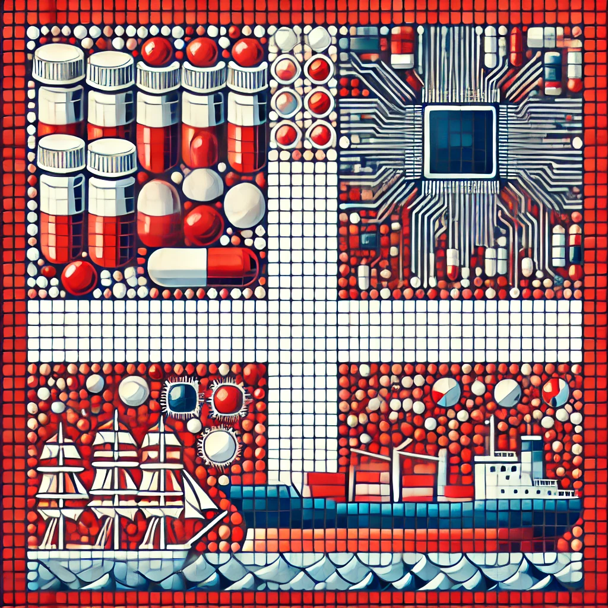

| Главная | Финляндия | Швеция | Норвегия | Дания |
|---|
Название 'Дания' происходит от древнескандинавского 'Danmark' — 'земля данов'.
Происхождение слова Дания
Происхождение топонима «Дания» до настоящего времени остаётся предметом дискуссий. Наиболее распространённой является гипотеза, согласно которой топоним происходит от самоназвания древнегерманского племени данов, обитавшего в древности на Ютландском полуострове. В ранних латинских хрониках название страны фигурирует как Dania, на древнескандинавском языке — Danmǫrk, от названия территории «датская», или «данская марка». «Данская марка» была образована в IX веке при административном устройстве пограничных земель империи Карла Великого. Наряду с наиболее распространённой, также существует версия о том, что в названии Denmark первая часть слова — Den — означает «плоская земля», аналогично немецкому Tenne — «гумно», английскому den — «низина», санскрит dhánus- («пустыня»), а вторая часть слова — -mark — означает «лесистую местность» или «пограничную зону» — вероятно, леса на границе с герцогством Шлезвиг, по аналогии с Финнмарком, Телемарком или Дитмаршеном.
Версии происхождения названия «Дания» встречаются и в средневековых источниках — в частности, в скандинавской хронике Chronicon Lethrense (XII век), трудах хрониста Свена Аггесена (конец XII века), летописца Саксона Грамматика (начало XIII века) и Балладе Эрика (середина XV века). Так, Chronicon Lethrense описывает, что когда римский император Август воевал с Данией во времена Давида, Дания состояла из семи территорий — Ютландия, Фюн, Зеландия, Мён, Фальстер, Лолланд и Сконе, которыми управлял король Иппер из Уппсалы (современная Швеция). У короля было три сына: Нори, Эстен и Дан. Дан был отправлен править Зеландией, Мёном, Фальстером и Лолландом. Когда юты сражались с императором Августом, они призвали Дана себе на помощь, и после победы провозгласили его королём Ютландии, Фюна, Видеслева и Сконе. Совет племён ютов решил назвать всю эту территорию «Данмарк» (Дания) в честь нового царя Дана. Саксон Грамматик в «Деяниях данов» также упоминает, что имя датскому народу дал легендарный король Дан, сын Хамбли, хотя при этом прямо не утверждает, что название «Дания» происходит от имени короля.
Дания была объединена в 10 веке. Сегодня – одна из самых развитых стран мира.
Люди жили в Дании с каменного века, но есть свидетельства того, что люди жили там около 50 000 г. до н.э. В 9-11 веках воины-викинги из Дании и других скандинавских стран совершали набеги на Европу. Большинство современных городов Дании были основаны после эпохи викингов. Дания, Норвегия и Швеция были объединены в Кальмарский союз королевой Маргрете в конце 14 века. Хотя Швеция вышла из Союза в 1523 году, Норвегией управляла Дания до 1814 года. Дания является конституционной монархией. В январе 2012 года королева Маргрете II отметила 40-летие своего пребывания на престоле. Дания имеет самую длинную непрерывную линию правителей в Европе. Королева Маргрете II ведет свое происхождение от короля Горма, жившего в десятом веке. Хотя королева является главой государства, премьер-министр является главой правительства. Парламент Дании состоит из одной палаты, называемой Фолькетинг, состоящей из 179 избранных членов.
Расположена на полуострове Ютландия, включает более 400 островов.
Природа
Берега Балтийского моря (восточная часть полуострова Ютландия, острова Зеландия, Фюн, Лолланн и других) сильно изрезаны широкими мелководными заливами (Орхус-Бугт, Кёге-Бугт) и заливами фиардового типа (Исе-фьорд, Оденсе-фьорд). На отдельных участках побережья северно-восточной части полуострова Ютландия (мыс Форнес), на островах Зеландия и Мён выходы верхнемеловых известняков сопровождаются высокими обрывистыми клифами. Берега Северного моря преимущественно низменные, выровненные: на западе Ютландии – от мыса Скаген до мыса Блованнс-Хук – преобладают аккумулятивные берега с лагунами (Рингкёбинг-фьорд, Ниссум-Бреднинг и других) и широкими пляжами, окаймлёнными поясом береговых дюн; на крайнем юго-западе Дании протягиваются ваттовые берега с полосой маршей, отгороженных от моря водозащитными сооружениями. Конфигурация береговой линии Дании изменялась в течение исторического времени: в результате сильного шторма 1865 образовался прол. Лангерак, отделивший северную часть полуострова Ютландия – остров Веннсюссель-Ти.
Климат
В Дании климат умеренный морской, с мягкой зимой и прохладным летом. Погода неустойчивая, ветреная, часты туманы и сильная облачность. Средние температуры января 0–0,5 °С, июля 15,5–17 °С. Зимой температуры незначительно понижаются с запада на восток, летом – с северо-востока на юго-запад. Осадков в год от 700–800 мм на западе страны до 500–600 мм на востоке, распределение осадков по сезонам в целом равномерное, с небольшим осенним максимумом. Продолжительность залегания маломощного снежного покрова не превышает 30 дней.
Ключевые секторы: фармацевтика, ИТ, судостроение. Важные компании: Maersk, LEGO, Carlsberg.

Известна архитектурой, дизайном (Арне Якобсен), литературой (Ганс Христиан Андерсен).
Популярные места: Копенгаген, Тиволи, замок Кронборг, статуя Русалочки.
Столица Дании, известная уютными набережными, современным дизайном и парком развлечений Тиволи. Набережная Нюхавн с красочными домиками и уютными кафе — одно из самых посещаемых мест города. Копенгаген также известен своим экологическим образом жизни, множеством велосипедных маршрутов и гастрономической сценой.
Один из старейших парков развлечений в мире, расположенный в центре Копенгагена. Тиволи привлекает не только аттракционами, но и красивыми садами, живыми выступлениями и атмосферой волшебства, особенно в рождественский период.
Знаменитый замок в Дании, также известный как "замок Гамлета", поскольку именно здесь разворачиваются события пьесы Шекспира. В Кронборге можно исследовать богатую историю Дании, прогуляться по величественным залам и насладиться видом на пролив Эресунн.
Одна из самых известных достопримечательностей Копенгагена, установленная в честь сказки Ганса Христиана Андерсена. Эта небольшая, но культовая статуя привлекает туристов со всего мира. Расположенная на берегу гавани, она стала символом города.
| Главная | Финляндия | Швеция | Норвегия | Дания |
|---|